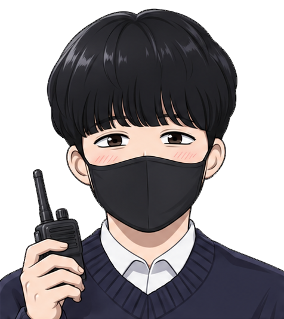
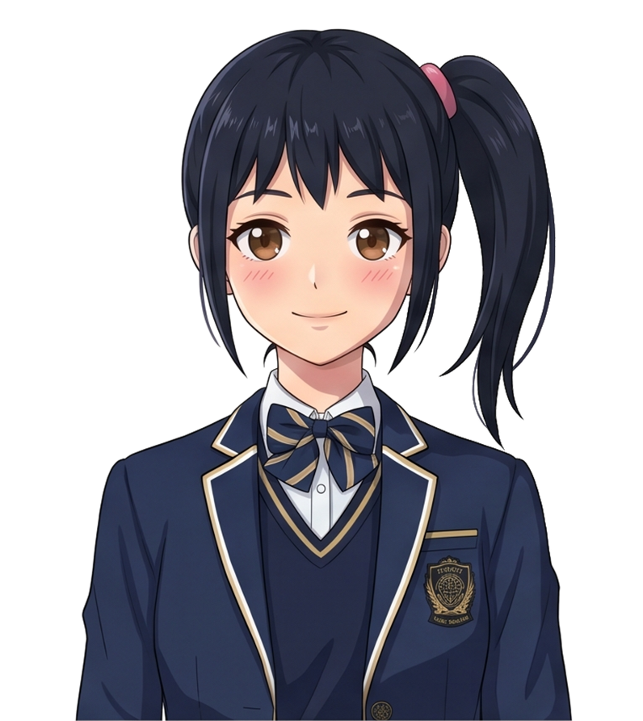

클리어 기록 사진
사진을 길게 누르면 저장할 수 있어요. 컴퓨터는 오른쪽 클릭으로 저장해요.


이 이야기의 거대 생물은 지어낸 것이에요.
인왕산 습지도 이야기 속에만 있는 곳이에요.
생물이 들어온 시기와 이유는 실제 기록을 바탕으로 했어요.
© 2026 임진삼. All rights reserved.
이 게임(이야기·그림·코드)의 무단 복제·수정·배포를 금지합니다.
수업에서 플레이하는 것은 자유롭게 할 수 있어요.
화면을 톡!
나오는 중에 한 번 더 톡
두 번째 볼 때부터 왼쪽 위 버튼
설정에서 느리게·보통·빠르게
📻 무전기 화면이 뜨면 진삼쌤이 말하는 거예요.
분홍 글자는 꼭 기억할 낱말이에요!
스틱이나 키보드
누른 곳에 쏙!
잠깐 무적!
방향키로도 움직여요 · Esc 일시정지
교란 생물을 놓치면 평형 막대가 줄어들어요.
생물에게 닿아도 줄어요. (큰 생물·공격일수록 더 많이!)
수가 적어지면 생태계가 스스로 회복해요.
마지막 보스를 물리치면 비밀번호를 알려줘요
실제 게임에서 그 스테이지에 도착했을 때의 스킬 포인트로 스킬을 찍고 시작해요.
사진을 길게 누르면 저장할 수 있어요. 컴퓨터는 오른쪽 클릭으로 저장해요.